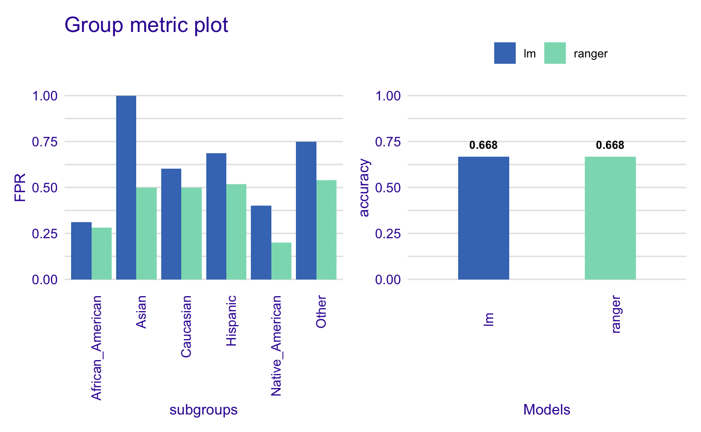
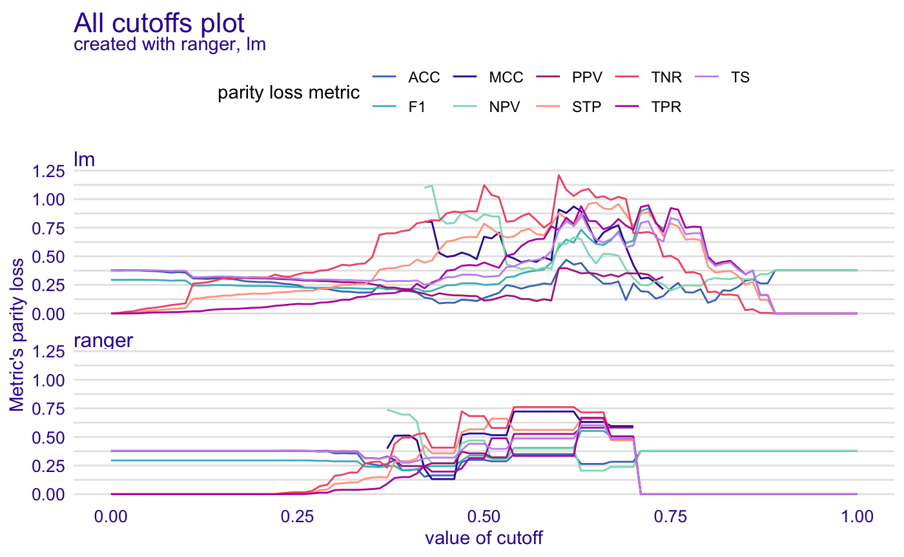
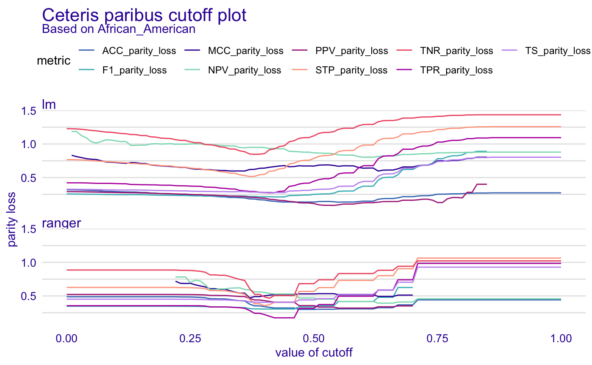

Basic Tutorial
Jakub Wiśniewski
Basic_tutorial.Rmdfairmodels
In this tutorial you will get to know when, why and how to use fairmodels. fairmodels is a tool for bias testing and fairness metrics visualization. It is compatible with DALEX and DALEXtra which are model agnositic explainers. Some knowledge of how to use those explainers will be needed but in this tutorial you should grasp the idea.
For this tutorial we will use compas data to see if someone will become recidivist in next 2 years.
Why?
Let’s say you are building court system that predicts if someone will become recidivist in the future. First you gather information then you build a model and predict outcomes. You get accuracy score of 90%. It is pretty good, but it appears that the model is more likely to say that African Americans will become recidivists. Model was trained on data that was discriminating certain ethnic groups. So now we have some options. First one is to change the data, and the second one is to tune model, and check if it behaves as we would like it to be. We will choose the second option.
Data
We will use modified ProPublica’s compas data to represent our problem.
#> Two_yr_Recidivism Number_of_Priors Age_Above_FourtyFive Age_Below_TwentyFive
#> 1 0 0 1 0
#> 2 1 0 0 0
#> 3 1 4 0 1
#> 4 0 0 0 0
#> 5 1 14 0 0
#> 6 0 3 0 0
#> Misdemeanor Ethnicity Sex
#> 1 0 Other Male
#> 2 0 African_American Male
#> 3 0 African_American Male
#> 4 1 Other Male
#> 5 0 Caucasian Male
#> 6 0 Other MaleFor fairmodels package to work properly we want to flip factor levels in target variable, so positive outcome (not being a recidivist) is being predicted by models. It is only needed for one specific function but more on it later.
Basic features
We train a ranger model and create an explainer with DALEX.
library(DALEX) library(ranger) # train rf_compas <- ranger(Two_yr_Recidivism ~., data = compas, probability = TRUE) # numeric target values y_numeric <- as.numeric(compas$Two_yr_Recidivism)-1 # explainer rf_explainer <- explain(rf_compas, data = compas[,-1], y = y_numeric)
#> Preparation of a new explainer is initiated
#> -> model label : ranger ( [33m default [39m )
#> -> data : 6172 rows 6 cols
#> -> target variable : 6172 values
#> -> predict function : yhat.ranger will be used ( [33m default [39m )
#> -> predicted values : numerical, min = 0.1630325 , mean = 0.5449484 , max = 0.8682215
#> -> model_info : package ranger , ver. 0.12.1 , task classification ( [33m default [39m )
#> -> residual function : difference between y and yhat ( [33m default [39m )
#> -> residuals : numerical, min = -0.8485859 , mean = -6.829256e-05 , max = 0.7729305
#> [32m A new explainer has been created! [39mfairness check
Than we create call function fairness_check() This function aggregates many explainers so you may compare many models. We assign object to name fobject which is short version of fairness_object - object returned by fairness_check(),
fobject <- fairness_check(rf_explainer, # explainer protected = compas$Ethnicity, # protected variable as factor privileged = "Caucasian", # level in protected variable, potentially more privileged cutoff = 0.5) # cutoff - optional, default = 0.5
#> Creating fairness object
#> -> Privileged subgroup : character ([32m Ok [39m )
#> -> Protected variable : factor ([32m Ok [39m )
#> -> Cutoff values for explainers : 0.5 ( for all subgroups )
#> -> Fairness objects : 0 objects
#> -> Checking explainers : 1 in total ( [32m compatible [39m )
#> -> Metric calculation : successful
#> [32m Fairness object created succesfully [39mLet’s see if our ranger model has bias.
fobject
#>
#> Fairness check for models: ranger
#>
#> [31mranger passes 0/5 metrics
#> [39mTotal loss: 2.555263plot(fobject)

Of course the protected parameter can be changed.
fobject_tmp <- fairness_check(rf_explainer, protected = compas$Sex, privileged = "Female")
#> Creating fairness object
#> -> Privileged subgroup : character ([32m Ok [39m )
#> -> Protected variable : factor ([32m Ok [39m )
#> -> Cutoff values for explainers : 0.5 ( for all subgroups )
#> -> Fairness objects : 0 objects
#> -> Checking explainers : 1 in total ( [32m compatible [39m )
#> -> Metric calculation : successful
#> [32m Fairness object created succesfully [39mplot(fobject_tmp)

In many metrics ranger exceeds fairness threshold (which can be changed by epsilon parameter). If bars reach red field on the left it means that there is bias towards certain unprivileged subgroup. If they reach one on the right it means bias towards privileged (Caucasian - in all metrics here Caucasian subgroup is referenced as base - 0) subgroup. Someone can argue that some groups are statistically more likely commit a crime but fairness_check() takes it into account. Statistical parity loss checks if proportion of assigned positive class is equal among all subgroups. In this example Native Americans and African Americans are more likely to be classified as recidivists. Other metrics measure how equal treatment and mistreatment among subgroups is. More on those metrics: wikipedia
Why do we have this bias? Model did learn from biased data. We can see it on plot below
plot density
plot_density(fobject)

As we can see it is more likely that model will categorize African Americans as not being recidivists than for example Asians. But maybe some groups are statistically more likely to go do crimes in the future. It is possible but that is why we used fairness_check() earlier. It does not only catch if subgroups are .
fairness object - idea
To really see what fairness_object is about, we need to make some more models and explainers.
library(gbm) rf_compas_1 <- ranger(Two_yr_Recidivism ~Number_of_Priors+Age_Below_TwentyFive, data = compas, probability = TRUE) lr_compas_1 <- glm(Two_yr_Recidivism~., data=compas, family=binomial(link="logit")) rf_compas_2 <- ranger(Two_yr_Recidivism ~., data = compas, probability = TRUE) rf_compas_3 <- ranger(Two_yr_Recidivism ~ Age_Above_FourtyFive+Misdemeanor, data = compas, probability = TRUE) rf_compas_4 <- ranger(Two_yr_Recidivism ~., data = compas, probability = TRUE) df <- compas df$Two_yr_Recidivism <- as.numeric(compas$Two_yr_Recidivism)-1 gbm_compas_1<- gbm(Two_yr_Recidivism~., data = df) explainer_1 <- DALEX::explain(rf_compas_1, data = compas[,-1], y = y_numeric) explainer_2 <- DALEX::explain(lr_compas_1, data = compas[,-1], y = y_numeric) explainer_3 <- DALEX::explain(rf_compas_2, data = compas[,-1], y = y_numeric, label = "ranger_2") explainer_4 <- DALEX::explain(rf_compas_3, data = compas[,-1], y = y_numeric, label = "ranger_3") explainer_5 <- DALEX::explain(gbm_compas_1, data = compas[,-1], y = y_numeric) explainer_6 <- DALEX::explain(rf_compas_4, data = compas[,-1], y = y_numeric, label = "ranger_4")
Now we create one object with all explainers
fobject <- fairness_check(explainer_1, explainer_2, explainer_3, explainer_4, explainer_5, explainer_6, protected = compas$Ethnicity, privileged = "Caucasian")
#> Creating fairness object
#> -> Privileged subgroup : character ([32m Ok [39m )
#> -> Protected variable : factor ([32m Ok [39m )
#> -> Cutoff values for explainers : 0.5 ( for all subgroups )
#> -> Fairness objects : 0 objects
#> -> Checking explainers : 6 in total ( [32m compatible [39m )
#> -> Metric calculation : successful
#> [32m Fairness object created succesfully [39mAs we can see there is some parameters in fairness_check such as:
1. x, … - list of DALEX explainers, and other fairness_object objects
2. protected - factor, containing subgroups as levels. Protected stands for protected variable (or sensitive attribute) 3. privileged - character, level in protected, it is subgroup suspected of having better results 4. cutoff - numeric, vector of cutoffs values matching the order of levels in protected variable. It affects only explainers so if fairness_object is passed it’s cutoff vector won’t be changed. 5. label - character, vector of labels for explainers only. Very convenient for fairness_check() iterative approach - having explainer, checking for bias, mitigating bias, passing both explainer and fairness object and comparing fairness. 6. epsilon - numeric, boundary position in fairness_check(). Fairness metrics are satisfied if parity loss values are between (-epsilon, epsilon)
What consists of fairness object?
fairness_object is output value of fairness_check() It is S3 object consisting of: * Parity loss metrics Popular confusion matrix metrics with parity loss - sum of distances of metric values between unprivileged subgroups and privlieged one. If model would have 0 in certain parity loss metric it would mean that it treats all subgroups equally.
fobject$metric_data
#> TPR_parity_loss TNR_parity_loss PPV_parity_loss NPV_parity_loss
#> 1 0.4876338 0.5782997 0.3219684 0.3001712
#> 2 0.4459198 1.1219620 0.1131800 0.8675808
#> 3 0.4069807 0.6532484 0.3686804 0.6563713
#> 4 0.3734750 0.3902308 0.4881695 0.3647346
#> 5 0.3203687 0.9853570 0.2740677 0.6097799
#> 6 0.3746164 0.6705940 0.3609451 0.4744798
#> FNR_parity_loss FPR_parity_loss FDR_parity_loss FOR_parity_loss
#> 1 0.4876338 0.5782997 0.3219684 0.3001712
#> 2 0.4459198 1.1219620 0.1131800 0.8675808
#> 3 0.4069807 0.6532484 0.3686804 0.6563713
#> 4 0.3734750 0.3902308 0.4881695 0.3647346
#> 5 0.3203687 0.9853570 0.2740677 0.6097799
#> 6 0.3746164 0.6705940 0.3609451 0.4744798
#> TS_parity_loss STP_parity_loss ACC_parity_loss F1_parity_loss MCC_parity_loss
#> 1 0.3960287 0.6602397 0.2868008 0.3094422 0.5158728
#> 2 0.3203605 0.7852645 0.1353720 0.2502984 0.6709033
#> 3 0.5277365 0.6373237 0.3806363 0.3803749 0.7916706
#> 4 0.3814321 0.2951150 0.1960918 0.3733294 0.3505547
#> 5 0.3855066 0.6860447 0.2416949 0.2938836 0.7170848
#> 6 0.4942720 0.6173572 0.3499590 0.3608886 0.6844386- groups_data
Fairness object gets metrics based on confusion matrix and checks them over the groups.
# for the first model fobject$groups_data$ranger$TPR
#> African_American Asian Caucasian Hispanic
#> 0.6129458 0.8695652 0.7533177 0.8062500
#> Native_American Other
#> 0.6666667 0.8447489It is simply metrics for certain subgroup.
What is relation between $groups_data and $metric_data ?
If we were going only to take score from certain metric (Let’s say fpr and 0.3) we wouldn’t know if it is good or bad. But we are aiming for equal treatment over all groups so if this metric score would be the same in all groups it would be very good. But the metrics wouldn’t be comparable between each others (fpr - 0.3 in all groups and accuracy - 0.9 in all groups, both are good in terms of parity). That is why we use privileged - to set benchmark. And for example Caucasian in fpr had score of 0.3 and African American 0.6. After setting privilieged = Caucasian Caucasian would have score 0, and African American 0.3, because is the distance between those metrics.
Note: When dealing with aggregating plots we use formula sum(abs(1-score)) to represent aggregated score in metrics. In short is how much it differs from ideal scores.
- explainers
list of DALEX explainers
- cutoff
# for first model fobject$cutoff$ranger
#> $African_American
#> [1] 0.5
#>
#> $Asian
#> [1] 0.5
#>
#> $Caucasian
#> [1] 0.5
#>
#> $Hispanic
#> [1] 0.5
#>
#> $Native_American
#> [1] 0.5
#>
#> $Other
#> [1] 0.5list of cutoff values for each model
fairness_check_data data used in print and plot of
fairness_object. It is already processed data and ready to plot. If someone were to useabs()metrics there would be equal to particular metrics in$metric_data. It means that it allows negative values. So when value is negative it means that score of privileged group in this metric was better.… - other parameters passed to
fairness_check()
Choosing best model
We now have a few models in our fairness_object
Let’s see how they perform in different metrics.
Stacked Barplot
sm <- stack_metrics(fobject) plot(sm)
 It displays accumulated (Stacked) metric scores for each model. The least metric score the better.
It displays accumulated (Stacked) metric scores for each model. The least metric score the better.

Plot fairness PCA
With this task we should use PCA. We call create_fairness_pca() to create fairness pca object.
fair_pca <- fairness_pca(fobject) print(fair_pca)
#> Fairness PCA :
#> PC1 PC2 PC3 PC4 PC5 PC6
#> [1,] 0.4316339 -0.8462791 -1.84520659 0.5376436 0.048758424 -4.753142e-16
#> [2,] -3.6937993 -0.8560968 -0.14556359 -0.5638410 -0.051385293 -1.804112e-16
#> [3,] 0.8670317 2.2370397 -0.22894637 -0.6445642 0.104671990 -5.134781e-16
#> [4,] 2.6689149 -2.1247671 0.79258417 -0.3864841 0.005098461 -2.151057e-16
#> [5,] -1.2982774 0.2991182 1.34328917 0.7781965 0.088448505 -7.042977e-16
#> [6,] 1.0244962 1.2909851 0.08384321 0.2790492 -0.195592086 -3.885781e-16
#>
#> Created with:
#> [1] "ranger" "lm" "ranger_2" "ranger_3" "gbm" "ranger_4"
#>
#> First two components explained 82 % of variance.Let’s plot!
plot(fair_pca)

It is done with loadings plot, which can be customized.
plot(fair_pca, scale = 0) # deafult = 0.5

Plot Heatmap
Another way to deal with grouped data is using heatmap.
fheatmap <- fairness_heatmap(fobject) plot(fheatmap, text_size = 2.5)

For both models and metrics dendograms are created. This way through hierarchical clustering we can look on similarities between models/metrics. It should give similar but more detailed information than PCA
It can be normalized among metrics.
fheatmap <- fairness_heatmap(fobject, scale = TRUE) plot(fheatmap , title = "Title can be changed", subtitle = "subtitle too!", text = FALSE) # we can turn values off via text= FALSE

Now we know what those scores are and how “similar” models are to each other
Metric and Performance Plot
Sometimes we would like to know how good are models in performance metrics and in fairness metrics at the same time, to see the tradeoff between them.
fap <- performance_and_fairness(fobject, fairness_metric = "FPR_parity_loss")
#> Performace metric is NULL, setting deafult ( accuracy )
#>
#> Creating object with:
#> Fairness metric FPR_parity_loss
#> Performance metric accuracyplot(fap)

We can add plots with help of patchwork
library(patchwork) library(ggplot2) p1 <- plot(performance_and_fairness(fobject, "TPR_parity_loss", "accuracy")) p2 <- plot(performance_and_fairness(fobject, "FPR_parity_loss", "auc")) + ggtitle(" ") + theme(legend.position = "none") p3 <- plot(performance_and_fairness(fobject, "NPV_parity_loss", "recall")) + ggtitle(" ") + theme(legend.position = "none") p4 <- plot(performance_and_fairness(fobject, "TS_parity_loss", "f1"))+ ggtitle(" ") + theme(legend.position = "none")
(p1 + p2)/(p3+p4)

Group Metric
When we have narrowed down our search for the best model we can use group_metric to check once again metrics within groups and decide which model to use.
fobject2 <- fairness_check(explainer_1,explainer_2, protected = compas$Ethnicity, privileged = "Caucasian")
#> Creating fairness object
#> -> Privileged subgroup : character ([32m Ok [39m )
#> -> Protected variable : factor ([32m Ok [39m )
#> -> Cutoff values for explainers : 0.5 ( for all subgroups )
#> -> Fairness objects : 0 objects
#> -> Checking explainers : 2 in total ( [32m compatible [39m )
#> -> Metric calculation : successful
#> [32m Fairness object created succesfully [39mgm <- group_metric(fobject2, fairness_metric = "FPR")
#> Performace metric not given, setting deafult ( accuracy )
#>
#> Creating object with:
#> Fairness metric FPR
#> Performance metric accuracyplot(gm)

Custom cutoff
We may see how cutoff affects parity loss of metrics
All cutoffs
All cutoffs measures where metrics exist (are not NA) and how they change if we modify cutoffs in all subgroups.
In this plot NA values are natural, so warnings are to be expected.
ac <- all_cutoffs(fobject2, label = 'lm') plot(ac)

Ceteris paribus cutoff
This function shows how parity loss metrics would change if we modified cutoff only for one subgroup (here African American) with other cutoffs fixed.
cpc <- ceteris_paribus_cutoff(fobject2, subgroup = "African_American") plot(cpc)

In future there will be advanced tutorial showing mitigation techniques and how to compare models after mitigation of bias.